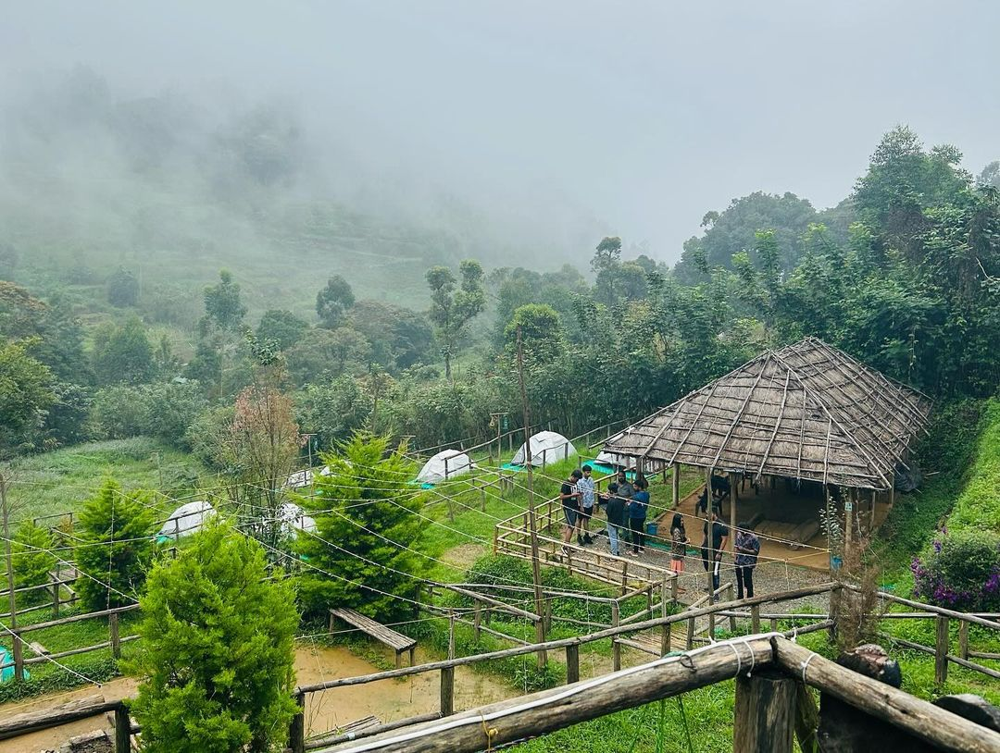
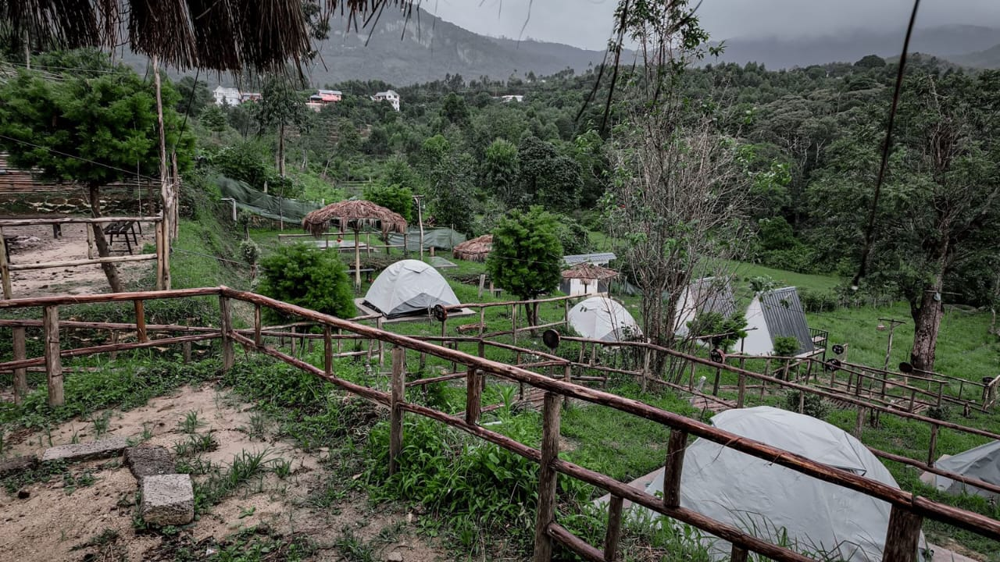
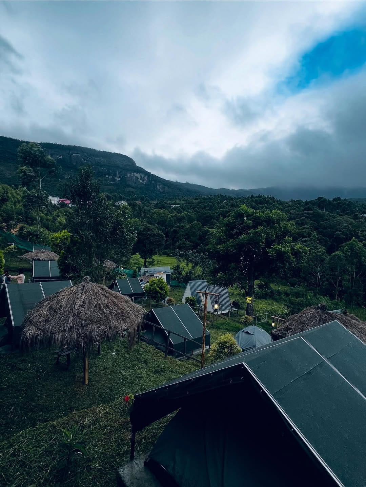

KANTHALOOR
⛺ Kanthaloor – Tent Stay
A peaceful nature escape in the beautiful hills of Kanthaloor. Stay in a cozy tent, explore scenic viewpoints, visit farms and enjoy an exciting waterfall trek.
DAY 1 – Arrival & Adventure Begins
🕝 2:30 PM – Check-in
Settle into your comfortable tent
and enjoy the fresh mountain air.
🥾 3:30 PM – Bramaram Point
Enjoy a mild trek and panoramic
views of the surrounding hills.
🌿 Lemon Grass Valley Visit
Explore the lush greenery and
beautiful valley landscapes.
🧴 Lemon Grass Oil Extraction Unit
Learn about lemon grass oil
extraction and its benefits.
🌳 Tree House Climbing
Climb the tree house and enjoy
a unique view of the surroundings.
🏡 6:30 PM – Back at Property
Relax at the campsite.
🔥 7:30 PM – Campfire & Music
Enjoy music, sharing sessions and
a relaxing campfire evening.
🍽️ 8:30 PM – Dinner
Chapathi, Chicken Curry, Rice
and Dal Curry.
🌙 11:00 PM – Good Night
DAY 2 – Nature & Farewell
🌞 6:30 AM – Good Morning
Wake up to the fresh mountain air
and beautiful sunrise.
🍊 7:30 AM – Fruit Farm Visit
Explore an organic fruit farm
and locally grown produce.
☕ 8:30 AM – Breakfast
Idly/Dosa, Chutney and Sambar.
🥾💧 9:30 AM – Kanthalloor Waterfall Trek
Trek to the beautiful Kanthalloor
Waterfalls.
👋 12:00 PM – Check-out
Perfect for: Couples · Friends Groups · Solo Travellers · Weekend Getaways
Facilities Available
🏕️ Tent Stay
🅿️ Parking
🔋 Charging Points
🧑🔧 On-Site Support
🍫 Snack & Essentials Shop
🚻 Clean Restrooms